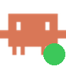
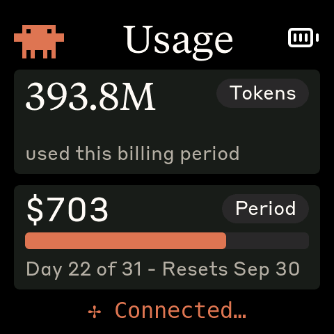
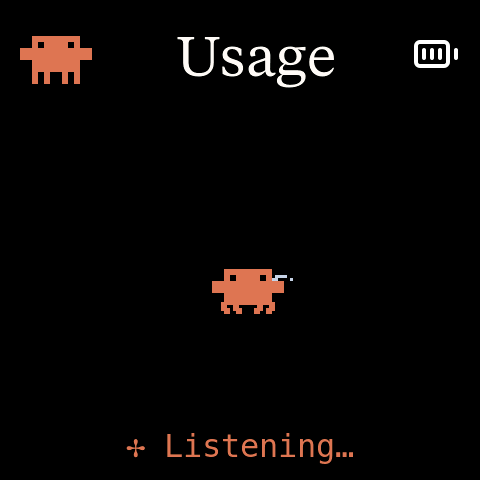
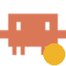
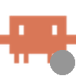
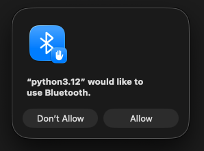
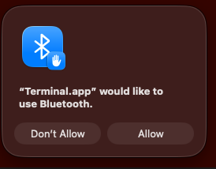

Clawdmeter Troubleshooting
- What the board shows
- The menu-bar icon
- Not logged in
- Bluetooth permission denied
- “Claude needs you” / “Done”
- Won't connect / re-pair
- Connected but no data
- Restart the board
- Daemon not running
- Setting up a new Mac
- Buttons
- Logs & asking for help
Start here: what does the board show?
The board has exactly four states, and each one points at a different place to look.


The menu-bar icon
On macOS the daemon puts a small Clawd in the menu bar. The colored dot is the fastest diagnosis there is.
Connected; data sent within the last 3 minutes.

Waiting for the board — or connected but nothing sent for 3 min (stale).
Claude Code isn't logged in, the Mac is refusing the daemon Bluetooth, or Anthropic can't be reached. The menu shows the fix.

You chose Disconnect. Choose Reconnect to resume.
Click the icon to see the status line and the actions:
In the error state a second line appears under the status, e.g. Fix: run claude auth login in Terminal, then wait a minute, and clicking that Fix: line performs the remedy: for a login error it opens Terminal with claude auth login ready to run on Enter; for a Bluetooth error it jumps to the exact System Settings pane; for a network error it opens the matching entry of this page. While the icon is amber, a See the FAQ line links straight to the relevant section. Quit stops the daemon until your next login; Disconnect only pauses it.
Red icon: “Claude Code not logged in” / “login expired”
The daemon reads your Claude Code login from the Mac's Keychain — it never logs in by itself. No login (or an expired one) means no data, and the board shows “No data”.
- Click the icon, then click the Fix: run
claude auth login… line. A Terminal window opens withclaude auth loginready to go — press Enter, then finish the browser sign-in. (The first time, macOS asks whether Python may control Terminal; click OK.) Or runclaude auth loginyourself. - Wait up to a minute. The daemon picks the new login up on its next poll — no restart needed. The icon turns green and the board's numbers return.
Red icon: “Bluetooth access denied for Python”
When the daemon starts for the first time, macOS asks whether it may use Bluetooth. If you clicked Don't Allow (or the dialog got dismissed), the daemon can't see the board and the icon turns red.

It appears once, when the daemon first starts. It says “python3.12” because that is the program the daemon runs on.

You'll only see it if you run the daemon by hand in Terminal. Allowing it doesn't help the daemon.
Fix it
- Click the menu-bar icon, then click the Fix: allow Python… line. System Settings opens on the Bluetooth privacy list.
- Turn on Python 3.12. Leave the other entries as they are.
- Wait up to a minute. The icon turns amber, then green once the board connects. No restart needed.
Python isn't in the list? Run this in Terminal to make macOS ask again, then click Allow:
tccutil reset BluetoothAlways clawdmeter-setup
(That first command makes every app ask for Bluetooth again, once. Just click Allow when they do.)
brew upgrade may make macOS ask once more. Same fix either way. If the error says “Bluetooth is turned off” instead, turn Bluetooth on in Control Center.The board says “Claude needs you” or “Done”
That's Claude Code talking to the board. Three tiny hooks in ~/.claude/settings.json (added by the installer) tell the daemon when Claude has stopped to ask you something — a permission prompt, or it's waiting for your input — and when it has finished a turn. The board shows “Claude needs you” (Clawd at his laptop) or “Done” and keeps it up until you tap the screen. Typing your next prompt clears it as well.
- Never shows up? Run
clawdmeter-daemon --install-hooksonce (the installer normally does this) and check thateventsisn't set tooffin~/.config/claude-usage-monitor/config. Hooks apply to new and running Claude Code sessions alike. - Don't want it?
events = offin that config file silences the board;clawdmeter-daemon --remove-hooksremoves the hooks and leaves any others you have untouched.
Board won't connect, or shows “To pair…”
Bluetooth pairing is a handshake stored on both sides. The common failure is that the two sides disagree: the board forgot the Mac (see the button warning), but the Mac still has an old entry. The fix is always the same — clear the Mac's side and pair fresh.
Forget and re-pair
- On the Mac: System Settings → Bluetooth. If Clawdmeter is listed under My Devices, click the ⓘ next to it and choose Forget This Device.
- On the board: make sure it shows “To pair…”. If it shows anything else, hold PWR for about 3–5 seconds and release — the screen switches to “To pair…”.
- Back in Bluetooth settings, Clawdmeter appears under Nearby Devices. Click Connect. Within about a minute the daemon attaches and the numbers appear.
clawdmeter-flash --name Ricardo (board plugged in over USB) makes it advertise as “Clawdmeter-Ricardo”, and the name is printed on the board's pairing screen so you know which one you're holding. Unnamed boards all advertise as “Clawdmeter” and the list can't tell them apart — power the other one off first (hold PWR a full 8 seconds) so exactly one is listed, then connect. Connecting to someone else's board does no harm (it refuses you) but wastes your time.Renamed the board but your Mac still shows the old name? macOS keeps the first name it ever saw for a device and doesn't refresh it — not on forget, not on re-pair. The new name is real (the board's pairing screen and any phone or other Mac show it); on this Mac just click ⓘ next to the device and type the name you want.
From the terminal instead of System Settings
With blueutil installed (brew install blueutil), the daemon can repair a stale pairing by itself. To do it by hand:
addr=$(system_profiler SPBluetoothDataType | awk '/Clawdmeter:/{f=1} f && /Address:/{print $2; exit}')
blueutil --unpair "$addr"Stop the daemon first (brew services stop clawdmeter) — while it holds the link, macOS re-pairs immediately. blueutil --paired does not list Bluetooth LE devices, hence the system_profiler lookup.
Moving a board to another Mac
- On the old Mac: menu-bar icon → Disconnect, then Bluetooth settings → Forget This Device.
- On the board: hold PWR 3–5 s and release → “To pair…”.
- On the new Mac: install the daemon (checklist), then Bluetooth → Connect.
Board connected, icon amber, but no data
Bluetooth is fine and the login is fine, yet nothing arrives. Click the icon → Open log and look at the last lines:
| Log says | Meaning | Fix |
|---|---|---|
CERTIFICATE_VERIFY_FAILEDIcon: “HTTPS certificate not trusted” | A corporate network is inspecting HTTPS (Zscaler and similar) and the daemon doesn't trust its certificate. | brew upgrade clawdmeter — since v0.1.2 the daemon trusts whatever the Mac's Keychain trusts. Still failing? Your IT proxy's certificate isn't in the Keychain; ask IT to install it. |
API call failedIcon: “Can't reach Anthropic” | No route to Anthropic: offline, VPN, captive Wi-Fi. | Fix the network; the daemon retries every 30 s on its own and the icon clears by itself. |
Spend fetch failedIcon: “Spend figure not updating” (after 5 in a row) | Only the dollar lookup is failing; the rest of the board still updates with the last known $ figure. | Usually the same network problem as above. If everything else works, wait — the icon clears the moment one lookup succeeds. |
Device not held by OS; waiting | macOS isn't connected to the board. | See Board won't connect. |
Sending: {…} every minute | The daemon is delivering. If the board still shows “No data”, it's a board problem. | Restart the board. |
Restart the board
The PWR button does three different things depending on how long you hold it, so the timing matters:
| Hold for | Then | What happens |
|---|---|---|
| a tap | — | switches screens / cycles the splash animation |
| 3–6 s | release | pairing mode — the board forgets its pairing and shows “To pair…” |
| 6–8 s | release | nothing (a safety gap) |
| 8 s | keep holding | power off |
To turn it back on, press PWR once, or plug in USB. If the board is on USB power it may simply restart when unplugged and plugged back in — with no battery installed, unplugging is the off switch.
The Mac side needs nothing: the daemon notices the board leaving and returning on its own.
No icon in the menu bar / daemon not running
- Installed with Homebrew:
brew services info clawdmetershows whether it's running;brew services start clawdmeterstarts it (and at every login from then on). - Installed with the one-line script:
launchctl load -w ~/Library/LaunchAgents/com.user.claude-usage-daemon.plist. - First run ever? macOS asks whether Python may use Bluetooth the first time the service starts — the installers (
clawdmeter-setupfor Homebrew; the one-line installer) start it for you and tell you the outcome. If the icon is red with a Bluetooth message, see Bluetooth permission denied. If it stays amber and the log mentions Bluetooth, re-runclawdmeter-setup(or the one-line installer) and watch for the prompt. - Icon deliberately hidden?
menubar = offin~/.config/claude-usage-monitor/configruns it headless. Remove the line and restart the service to get the icon back. - More than one icon? Two copies are running (e.g. Homebrew service and the old LaunchAgent). Keep one:
launchctl unload -w ~/Library/LaunchAgents/com.user.claude-usage-daemon.plist, orbrew services stop clawdmeter.
Setting up a new Mac (or a friend's)
- Log into Claude Code on that Mac:
claude auth login. The daemon can't work without it. - Install the daemon:
brew install ALVARR55/clawdmeter/clawdmeter, thenclawdmeter-setup— that second command starts the login service; click Allow when macOS asks whether Python may use Bluetooth. The one-line installer from the README does both in one go. - The icon appears in the menu bar (amber — no board yet).
- Put the board in pairing mode if it isn't showing “To pair…” (hold PWR 3–5 s, release), then System Settings → Bluetooth → Connect.
- Within a minute: green icon, numbers on the board.
Tokens are counted from Claude Code's local transcripts, so that box is per-Mac; the $ figure is your account's, so it's the same on every Mac.
Buttons on the board
| Button (label on the board) | What it does |
|---|---|
| BOOT | Held → sends Space to the Mac as a keystroke: Claude Code's voice push-to-talk. |
| KEY | Press → sends Shift+Tab: cycles Claude Code's permission mode. |
| PWR | Tap: switch screen. Hold 3–5 s + release: pairing mode. Hold 8 s: power off. See Restart the board. |
The keystrokes land in whichever window has focus, and only work while the board is connected to this Mac.
Logs and asking for help
Menu-bar icon → Open log, or in Terminal:
tail -n 30 /opt/homebrew/var/log/clawdmeter.log # Homebrew install
tail -n 30 ~/Library/Logs/claude-usage-daemon.out.log # one-line-script installWhen asking for help, paste the last ~10 log lines and say what the board's screen shows and what color the icon is — those three facts pin down almost every problem on this page.